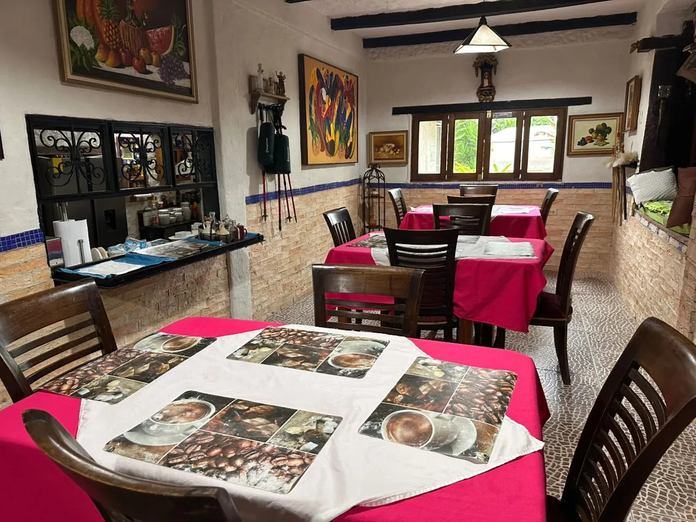

Restaurante
Gastronomía de la zona. Desayunos, almuerzos y cenas. Para el menú, los horarios y los precios, escríbanos por WhatsApp y le respondemos.
Pregúntenos lo que quiera saber.
Le respondemos por WhatsApp con el menú, los horarios y lo que necesite saber.
Reserva tu estadía en 3 simples pasos
Contáctanos por WhatsApp indicando fechas de reservación y número de personas.
Te enviamos disponibilidad y tarifas de nuestros servicios (hospedaje, restaurante y rutas: Café y Duende Cafetalero).
Una vez confirmada tu reservación, compartimos la ubicación exacta y las indicaciones para llegar.